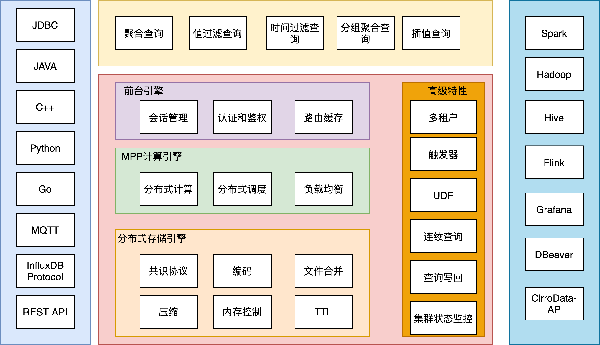
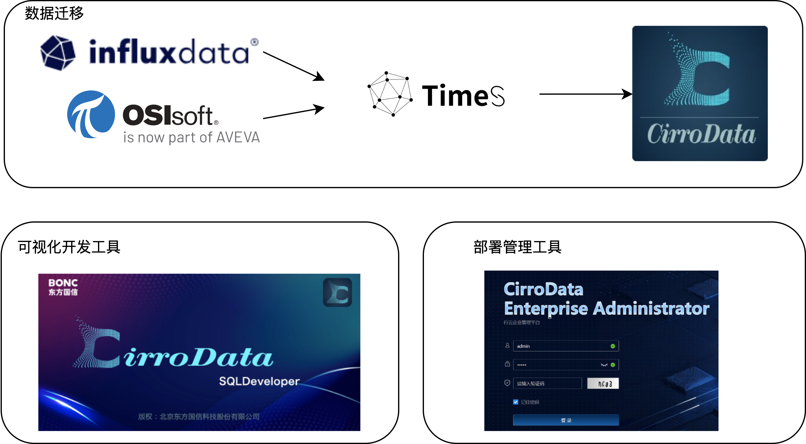

CirroData-TimeS 1.0是在CirroData-TimeS 0.12版本的基础上，结合大量工业场景实践和需求，历时1年半研发，集时序数据高效读写、压缩存储、实时计算能力为一体的数据库服务，可广泛应用于物联网和互联网领域，实现对设备及业务服务的实时监控、实时预测、实时告警。
相比0.12版本，CirroData-TimeS 1.0新增如下特性：
架构：
- 全新分布式架构，支持秒级扩缩容；
- 全新MPP架构，提升读写性能，单机写入性能3000万点/s，TB级别数据百毫秒查询；
- 提供多种副本一致性协议，兼顾性能和一致性；
功能：

- 新增多租户功能：支持对磁盘、时间序列数量，CPU，QPS，Memory等限制。
- 支持触发器：配合用户自定义逻辑，可完成告警、数据转发等功能；
- 连续查询：对实时数据周期性地自动执行的查询，并将查询结果写入指定的时间序列中；
- 指标监控：对100多项系统指标进行监控，实时检测系统运行状态；
- 查询写回功能：实现内部ETL、查询结果存储等；
周边工具：

- 支持CirroData-TimeS数据同步到CirroData-AP中，增强数据融合分析能力；
- 全新SQLDeveloper，新增权限管理，元数据模块管理、各种数据查询可视化、数据导入导出等功能，降低用户使用成本；
- 全新部署运维工具CEA，界面式部署方式，极简运维。
- 支持InfluxDB数据导入到CirroData-TimeS中；
- 支持PI数据导入到CirroData-TimeS中；